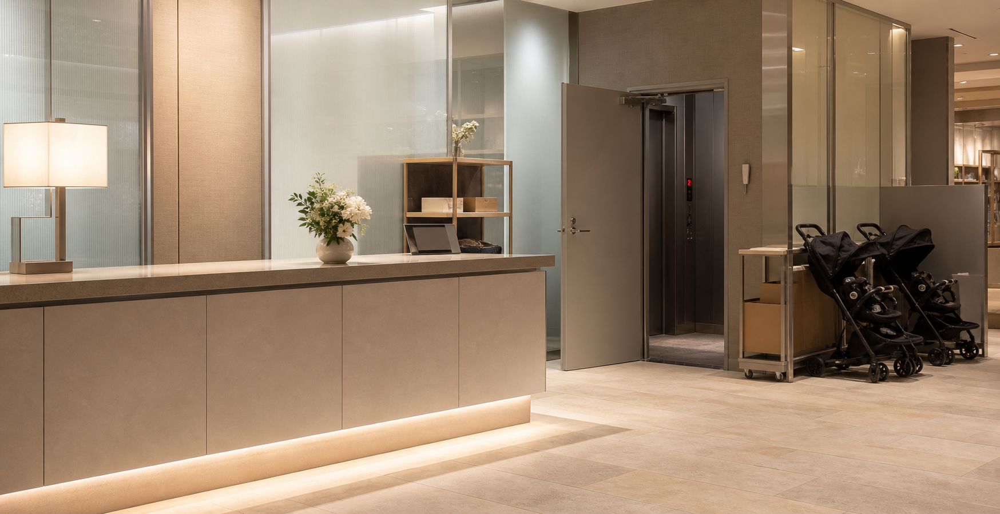

総合案内
本館1階と2階駅側入口で、売場案内、催事案内、待ち合わせ案内を承ります。

STORE SERVICE
案内所、配送承り、ベビーカー貸出、免税手続き、遺失物受付など、館内で利用できるサービスをまとめています。
本館1階と2階駅側入口で、売場案内、催事案内、待ち合わせ案内を承ります。
食品、ギフト、衣料品の配送を承ります。受付時間は19:30までです。
当日分は防災センターで一時保管し、翌営業日に総合案内へ移管します。
北側、南側、荷物用の3系統を運用しています。点検中は掲示をご確認ください。
閉店後の落とし物、急病、設備異常のお問い合わせは、1階通用口横のインターホンから防災センターへご連絡ください。